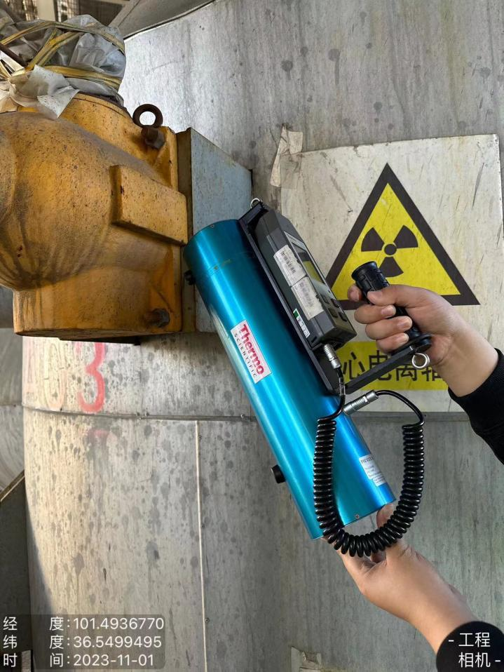

检 测 报 告
QNJC-2025-0293-FH
项目名称： | 使用放射源核技术利用项目辐射环境检测 |
委托单位： | 青海云天化国际化肥有限公司 |
检测性质： | 委托检测 |
报告日期： | 2023年8月1日 |
陕西秦洲核与辐射安全技术有限公司
（检验检测专用章）
检 测 报 告
QNJC-2025-0293-FH
项目名称： | 使用放射源核技术利用项目辐射环境检测 |
委托单位： | 青海云天化国际化肥有限公司 |
检测性质： | 委托检测 |
报告日期： | 2023年8月1日 |
陕西秦洲核与辐射安全技术有限公司
（检验检测专用章）
报告说明
1.本报告适用于陕西秦洲核与辐射安全技术有限公司电离辐射、电磁辐射等项目的检测报告。
2.本报告无陕西秦洲核与辐射安全技术有限公司“检验检测专用章”、无骑缝章、无章、无编制人、审核人、签发人签字无效。
3.现场检测，检测结果仅对当次检测时工况负责，委托方需对自己提供的工况等信息负责。
4.如委托单位对本报告检测数据有异议，应于收到本报告之日起十五日内向本公司提出书面申诉，逾期则视为认可检测结果。
5.本报告全部或部分复制，私自转让、盗用、冒用、涂改或以其他任何形式篡改的均属无效。
6.未经我公司同意，本报告不得用于委托范围之外的其他商业用途。
7.*为分包检测结果。
名 称：陕西秦洲核与辐射安全技术有限公司
地 址：陕西省西咸新区沣西新城中国西部科技创新港创科大厦12层
电 话：029-89586445
传 真：029-89586445
网 址：www.qznrs.net
邮政编码：712046

项目名称 | 使用放射源核技术利用项目辐射环境检测 | 使用放射源核技术利用项目辐射环境检测 | 使用放射源核技术利用项目辐射环境检测 | ||||||
委托单位 | 青海云天化国际化肥有限公司 | 青海云天化国际化肥有限公司 | 青海云天化国际化肥有限公司 | ||||||
检测地点 | 青海省西宁市甘河工业园甘河大道5号、6号 | 青海省西宁市甘河工业园甘河大道5号、6号 | 青海省西宁市甘河工业园甘河大道5号、6号 | ||||||
联系人 | 郭李婷 | 联系电话 | 15509714797 | ||||||
检测类别 | 电离辐射 | 委托编号 | QNJC-202401-E001 | ||||||
检测因子 | X、γ辐射剂量率 | 检测日期 | 2023年11月1日 | ||||||
检测依据 | 《辐射环境检测技术规范》（HJ 61-2021） 《环境γ辐射剂量率测量技术规范》（HJ 1157-2021） 《含密封源仪表的放射卫生防护要求》（GBZ 125-2009） | 《辐射环境检测技术规范》（HJ 61-2021） 《环境γ辐射剂量率测量技术规范》（HJ 1157-2021） 《含密封源仪表的放射卫生防护要求》（GBZ 125-2009） | 《辐射环境检测技术规范》（HJ 61-2021） 《环境γ辐射剂量率测量技术规范》（HJ 1157-2021） 《含密封源仪表的放射卫生防护要求》（GBZ 125-2009） | ||||||
评价依据 | 《含密封源仪表的放射卫生防护要求》（GBZ 125-2009） | 《含密封源仪表的放射卫生防护要求》（GBZ 125-2009） | 《含密封源仪表的放射卫生防护要求》（GBZ 125-2009） | ||||||
检测结果 | 检测结果详见表3；检测结论详见表4 | 检测结果详见表3；检测结论详见表4 | 检测结果详见表3；检测结论详见表4 | ||||||
附件 | 现场检测照片 | 现场检测照片 | 现场检测照片 | ||||||
备注 | / | / | / | ||||||
一、检测仪器
表1 检测仪器基本信息
仪器名称 | 仪器型号 | 仪器编号 | 测量范围 | 溯源单位/证书编号 | 有效期至 |
剂量率仪 | FH40G-X+ FHZ672E-10 | QNJC-YQ-011 | 探头剂量率：1nSv/h～100μSv/h 探头能量范围：30keV~4.4MeV 主机剂量率：10nSv/h～1Sv/h 主机能量范围：30keV~4.4MeV | 中国辐射防护研究院放射性计量站/校字第[2023]-L018 | 2024.02.05 |
二、基本信息
表2 密封放射源基本信息[1]
序号 | 核素名称 | 出厂活度（Bq） | 放射源编码 | 出厂日期 | 放射源分类 | 用途 | 使用场所 |
1 | Cs-137 | 1.11E+09 | 0121CS000654 | 2021.01.21 | Ⅳ类 | 料位计 | 尿素装置汽提塔 |
注：[1]委托方提供的信息。
三、检测结果
表3 检测结果
核素名称 | 核素名称 | 核素名称 | Cs-137 | Cs-137 | 放射源编码 | 放射源编码 | 0121CS000654 | 0121CS000654 | ||||||||||||||||||||||||||||||||||||||||||||||||||||||||||||||||||||||||
出厂活度 | 出厂活度 | 出厂活度 | 1.11E+09 | 1.11E+09 | 出厂日期 | 出厂日期 | 2021.01.21 | 2021.01.21 | ||||||||||||||||||||||||||||||||||||||||||||||||||||||||||||||||||||||||
使用场所 | 使用场所 | 使用场所 | 尿素装置汽提塔 | 尿素装置汽提塔 | 用 途 | 用 途 | 料位计 | 料位计 | ||||||||||||||||||||||||||||||||||||||||||||||||||||||||||||||||||||||||
类 别 | 类 别 | 类 别 | Ⅳ类 | Ⅳ类 | 本 底 | 本 底 | 厂区门口（0.074～0.128）μSv/h | 厂区门口（0.074～0.128）μSv/h | ||||||||||||||||||||||||||||||||||||||||||||||||||||||||||||||||||||||||
检测条件 | 检测条件 | 检测条件 | 透射式仪表，源闸开启，有待测物。 | 透射式仪表，源闸开启，有待测物。 | 透射式仪表，源闸开启，有待测物。 | 透射式仪表，源闸开启，有待测物。 | 透射式仪表，源闸开启，有待测物。 | 透射式仪表，源闸开启，有待测物。 | ||||||||||||||||||||||||||||||||||||||||||||||||||||||||||||||||||||||||
序号 | 检测点位描述 | 检测点位描述 | 检测点位描述 | 检测结果（μSv/h） | 序号 | 检测点位描述 | 检测点位描述 | 检测结果（μSv/h） | ||||||||||||||||||||||||||||||||||||||||||||||||||||||||||||||||||||||||
1 | 距源容器上方表面5cm | 距源容器上方表面5cm | 距源容器上方表面5cm | - | 2 | 距源容器上方表面100cm | 距源容器上方表面100cm | - | ||||||||||||||||||||||||||||||||||||||||||||||||||||||||||||||||||||||||
3 | 距源容器下方表面5cm | 距源容器下方表面5cm | 距源容器下方表面5cm | 0.306 | 4 | 距源容器下方表面100cm | 距源容器下方表面100cm | 0.109 | ||||||||||||||||||||||||||||||||||||||||||||||||||||||||||||||||||||||||
5 | 距源容器东侧表面5cm | 距源容器东侧表面5cm | 距源容器东侧表面5cm | 0.261 | 6 | 距源容器东侧表面100cm | 距源容器东侧表面100cm | 0.101 | ||||||||||||||||||||||||||||||||||||||||||||||||||||||||||||||||||||||||
7 | 距源容器北侧表面5cm | 距源容器北侧表面5cm | 距源容器北侧表面5cm | 1.84 | 8 | 距源容器北侧表面100cm | 距源容器北侧表面100cm | 0.154 | ||||||||||||||||||||||||||||||||||||||||||||||||||||||||||||||||||||||||
9 | 距源容器南侧表面5cm | 距源容器南侧表面5cm | 距源容器南侧表面5cm | 0.425 | 10 | 距源容器南侧表面100cm | 距源容器南侧表面100cm | 0.099 | ||||||||||||||||||||||||||||||||||||||||||||||||||||||||||||||||||||||||
11 | 距探测器西侧表面5cm | 距探测器西侧表面5cm | 距探测器西侧表面5cm | 0.399 | 12 | 距探测器西侧表面100cm | 距探测器西侧表面100cm | 0.095 | ||||||||||||||||||||||||||||||||||||||||||||||||||||||||||||||||||||||||
注：1.本底值未扣除宇宙射线响应值，检测结果未扣除本底值。 2.检测结果为“-”处因无法到达，未检测。 | 注：1.本底值未扣除宇宙射线响应值，检测结果未扣除本底值。 2.检测结果为“-”处因无法到达，未检测。 | 注：1.本底值未扣除宇宙射线响应值，检测结果未扣除本底值。 2.检测结果为“-”处因无法到达，未检测。 | 注：1.本底值未扣除宇宙射线响应值，检测结果未扣除本底值。 2.检测结果为“-”处因无法到达，未检测。 | 注：1.本底值未扣除宇宙射线响应值，检测结果未扣除本底值。 2.检测结果为“-”处因无法到达，未检测。 | 注：1.本底值未扣除宇宙射线响应值，检测结果未扣除本底值。 2.检测结果为“-”处因无法到达，未检测。 | 注：1.本底值未扣除宇宙射线响应值，检测结果未扣除本底值。 2.检测结果为“-”处因无法到达，未检测。 | 注：1.本底值未扣除宇宙射线响应值，检测结果未扣除本底值。 2.检测结果为“-”处因无法到达，未检测。 | 注：1.本底值未扣除宇宙射线响应值，检测结果未扣除本底值。 2.检测结果为“-”处因无法到达，未检测。 | ||||||||||||||||||||||||||||||||||||||||||||||||||||||||||||||||||||||||
检 测 点 位 图 | 检 测 点 位 图 |
（一）俯视图 （二）正视图 |
（一）俯视图 （二）正视图 |
（一）俯视图 （二）正视图 |
（一）俯视图 （二）正视图 |
（一）俯视图 （二）正视图 |
（一）俯视图 （二）正视图 |
（一）俯视图 （二）正视图 | ||||||||||||||||||||||||||||||||||||||||||||||||||||||||||||||||||||||||
四、检测结论
表 4 含密封源仪表使用场所适宜性评价表
依据《含密封源仪表的放射卫生防护要求》（GBZ 125-2009），检测结果及评价如下：
序号 | 核素名称 | 放射源编码 | 用途 | 检测结果（μSv/h） | 检测结果（μSv/h） | 含密封源仪表使用场所适宜性评价 | ||
序号 | 核素名称 | 放射源编码 | 用途 | 5cm | 1m | 含密封源仪表使用场所适宜性评价 | ||
1 | Cs-137 | 0121CS000654 | 料位计 | 0.261~1.84 | 0.095~0.154 | 对人员的活动范围不限制 | ||
（报告正文完）
编 制 人： | 审 核 人： | 签 发 人： | 检验检测专用章 |
编 制 人： | 审 核 人： | 签 发 人： | 签发日期： |
附件：
 | / |
现场检测照片